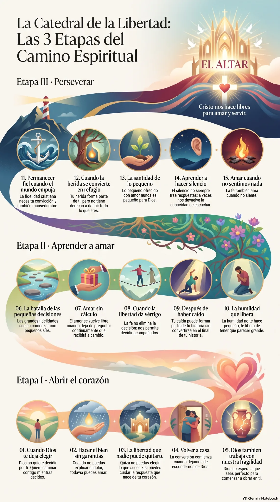

La Catedral de la Libertad
Entra en la catedral, recorre quince lámparas y descubre con Cristo para qué queremos ser libres.
Quince lámparas te esperan apagadas en la nave.
Un camino por la catedral
Imagina que entras en una catedral. Cada lámpara ilumina una situación de la vida: una decisión, una herida, una caída o un tiempo de silencio. Al fondo está el altar. Allí nos espera Cristo, que da sentido al recorrido.
No necesitas conocer las obras literarias. Cada lámpara parte de la vida, se ilumina con una obra y te invita al silencio, la oración y un paso concreto. Lee sin prisa: una al día o una a la semana.
Una pregunta nos acompaña:
¿para qué quiero ser libre?
Recorre la nave
Sigue bajando: avanzas por el pasillo central y pasas junto a las quince lámparas hasta llegar al altar. Toca cualquiera para leerla.
Quince matices de una misma libertad
En el centro está la libertad. A su alrededor, quince maneras de aprender a vivirla. Toca una luz para ir directamente a su lámpara.

El camino completo de un vistazo
Comenzamos abriendo el corazón, aprendemos a amar y perseveramos. Al final del camino está Cristo.
Lee la imagen de abajo arriba: de la etapa I hasta el altar. Tócala para verla a tamaño completo, guardarla o compartirla.
Descargar la infografía
Cristo y la verdadera libertad
La meta del camino es ser libres para amar y servir. Las quince lámparas desembocan en una pregunta más profunda: no solamente «¿soy libre?», sino «¿para qué quiero ser libre?».
Llegar al altar«Si el Hijo os hace libres, seréis realmente libres.»
Juan 8,36